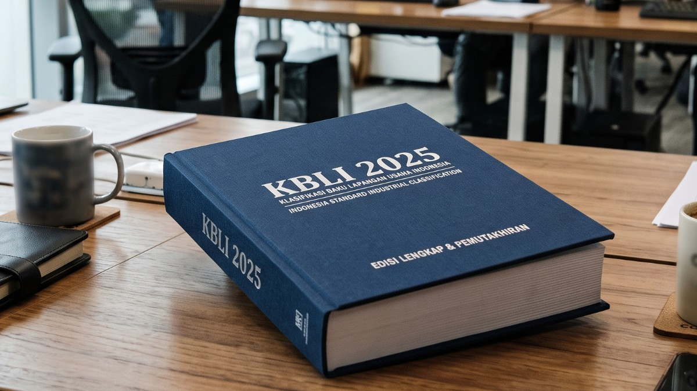
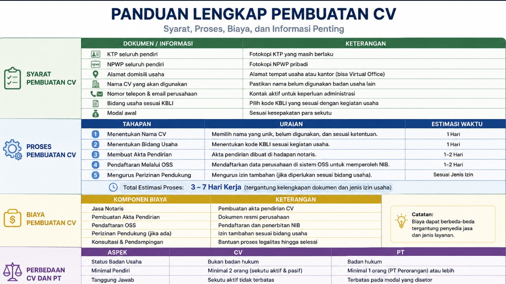
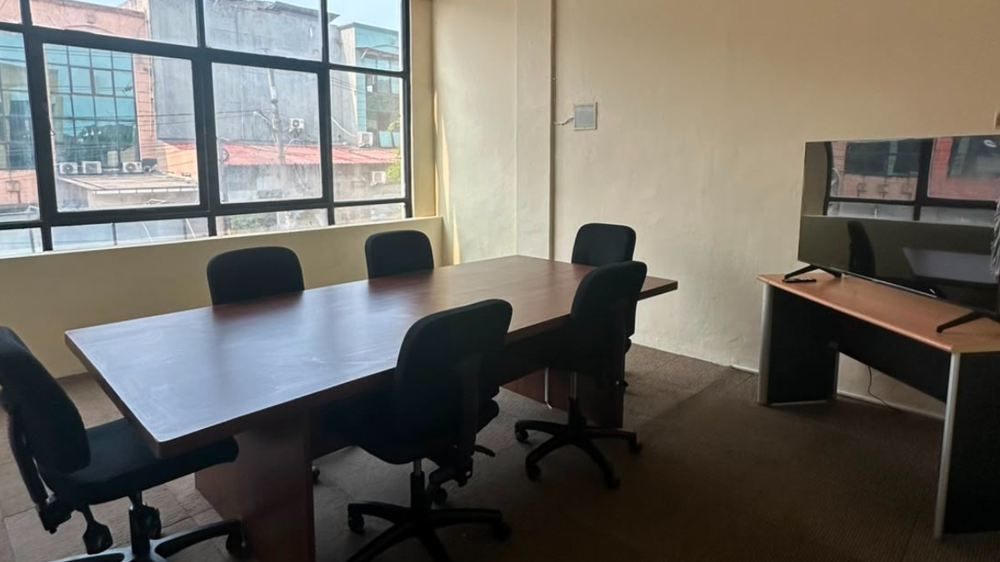

Eksplorasi KBLI 2025: Perubahan Penting dan Artinya untuk Anda

Gambaran Umum KBLI dan Pentingnya KBLI
Klasifikasi Baku Lapangan Usaha Indonesia (KBLI) adalah sistem penting yang digunakan untuk mengklasifikasikan setiap kegiatan ekonomi di Indonesia. Tujuannya adalah menyediakan kerangka kerja untuk mengidentifikasi dan mengelompokkan berbagai sektor dan subsektor perekonomian. Klasifikasi ini penting untuk menciptakan cara pelaporan dan analisis data ekonomi yang terstandardisasi, yang sangat vital bagi perencanaan pemerintah, pembuatan kebijakan, dan pengembangan strategi bisnis. Sistem KBLI diperbarui secara berkala untuk mencerminkan perkembangan kegiatan ekonomi, kemajuan teknologi, dan tren global.
Signifikansi KBLI tidak hanya sebatas pengelompokan semata. KBLI menjadi acuan bagi berbagai proses regulasi dan administrasi. Misalnya, pelaku usaha harus merujuk pada kode KBLI spesifik mereka saat mengajukan izin, lisensi, dan dokumen legal lainnya. Kepatuhan terhadap kode KBLI yang benar memastikan bisnis beroperasi sesuai kerangka hukum dan mematuhi regulasi khusus industri. Pendekatan sistematis ini membantu menjaga ketertiban dan transparansi dalam lingkungan bisnis, mendorong persaingan yang sehat dan pertumbuhan ekonomi.
Selain itu, KBLI juga berperan penting dalam analisis statistik dan riset ekonomi. Dengan menyediakan sistem klasifikasi yang seragam, KBLI memungkinkan pengumpulan dan perbandingan data ekonomi lintas sektor dan periode waktu. Data ini sangat berharga bagi instansi pemerintah, peneliti, maupun pelaku usaha, karena membantu mengidentifikasi tren, menilai kinerja ekonomi, dan mengambil keputusan yang tepat. Singkatnya, KBLI adalah elemen fundamental infrastruktur ekonomi Indonesia yang mendukung kepatuhan regulasi, akurasi statistik, dan perencanaan strategis.
Perubahan Utama dalam KBLI 2025
KBLI 2025 yang akan datang memperkenalkan sejumlah perubahan signifikan yang mencerminkan dinamika ekonomi global dan pesatnya inovasi teknologi. Salah satu pembaruan paling menonjol adalah dimasukkannya kategori baru untuk industri yang sedang berkembang seperti ekonomi digital, energi terbarukan, dan bioteknologi. Penambahan ini mengakui pentingnya sektor-sektor tersebut dan memberikan gambaran yang lebih akurat tentang lanskap ekonomi saat ini. Dengan memasukkan kategori-kategori baru ini, KBLI 2025 bertujuan untuk lebih baik menangkap kontribusi industri-industri inovatif ini terhadap perekonomian nasional.
Perubahan penting lainnya dalam KBLI 2025 adalah penyempurnaan kategori yang sudah ada untuk memberikan klasifikasi yang lebih rinci. Penyempurnaan ini melibatkan pemecahan kategori luas menjadi subkategori yang lebih spesifik, sehingga memungkinkan pemahaman yang lebih detail terhadap kegiatan ekonomi. Sebagai contoh, sektor informasi dan komunikasi telah diperluas untuk mencakup subkategori berbagai jenis layanan digital, seperti e-commerce, fintech, dan pembuatan konten digital. Peningkatan granularitas ini tidak hanya meningkatkan akurasi data, tetapi juga membantu pelaku usaha mengidentifikasi pasar khusus (niche) dan peluang pertumbuhan.
Selain itu, KBLI 2025 memperkenalkan pembaruan pada sistem pengkodean untuk meningkatkan kejelasan dan kemudahan penggunaan. Sistem pengkodean baru dirancang agar lebih intuitif, sehingga memudahkan pelaku usaha dan instansi pemerintah mengidentifikasi kode yang tepat untuk kegiatan mereka. Perubahan ini diharapkan dapat menyederhanakan proses administrasi dan mengurangi kemungkinan kesalahan klasifikasi. Secara keseluruhan, perubahan utama dalam KBLI 2025 mencerminkan pendekatan yang berorientasi ke depan dalam klasifikasi ekonomi, memastikan sistem ini tetap relevan dan berguna di tengah dunia yang terus berubah dengan cepat.
Dampak KBLI 2025 terhadap Berbagai Industri
Penerapan KBLI 2025 diperkirakan akan memberikan dampak signifikan terhadap berbagai industri, membentuk ulang lanskap ekonomi dan memengaruhi strategi bisnis. Salah satu sektor yang paling terdampak adalah ekonomi digital, yang kini memiliki representasi lebih komprehensif dalam sistem klasifikasi. Dimasukkannya subkategori khusus untuk layanan digital seperti e-commerce, fintech, dan pemasaran digital mengakui pesatnya pertumbuhan dan pentingnya aktivitas-aktivitas ini. Pengakuan ini kemungkinan akan menarik lebih banyak investasi dan dukungan baik dari pemerintah maupun sektor swasta, yang selanjutnya mendorong inovasi dan ekspansi dalam ekonomi digital.
Sektor energi terbarukan adalah industri lain yang diuntungkan dari pembaruan KBLI 2025. Dengan diperkenalkannya kategori baru untuk sumber energi terbarukan seperti tenaga surya, angin, dan biomassa, sistem klasifikasi kini lebih mencerminkan beragam aktivitas dalam sektor ini. Perubahan ini diharapkan dapat memfasilitasi pengumpulan dan analisis data yang lebih akurat, membantu pembuat kebijakan dan pelaku usaha mengambil keputusan investasi dan strategi pengembangan yang tepat. Selain itu, visibilitas aktivitas energi terbarukan yang meningkat dalam sistem klasifikasi dapat mendorong lebih banyak perusahaan masuk ke pasar dan berkontribusi pada transisi Indonesia menuju masa depan energi yang lebih berkelanjutan.
Industri tradisional seperti manufaktur dan pertanian juga akan mengalami perubahan di bawah KBLI 2025. Penyempurnaan kategori dalam sektor-sektor ini memungkinkan pemahaman yang lebih rinci terhadap berbagai aktivitas dan proses yang terlibat. Sebagai contoh, sektor manufaktur kini mencakup subkategori khusus untuk teknik dan teknologi manufaktur canggih, seperti pencetakan 3D dan otomasi. Granularitas ini memungkinkan pelaku usaha melacak tren industri dengan lebih baik, mengidentifikasi peluang inovasi, dan mengoptimalkan operasional mereka. Demikian pula, klasifikasi terbaru sektor pertanian memberikan gambaran yang lebih jelas tentang beragam aktivitas, mulai dari praktik pertanian tradisional hingga operasi agribisnis modern.
Bagaimana KBLI 2025 Memengaruhi Operasional Bisnis
Penerapan KBLI 2025 akan memberikan dampak besar terhadap operasional bisnis di seluruh sektor, sehingga mengharuskan penyesuaian pada berbagai aspek aktivitas sehari-hari. Salah satu dampak langsung adalah kebutuhan pelaku usaha untuk memperbarui catatan administrasi mereka agar sesuai dengan kode klasifikasi baru. Proses ini melibatkan peninjauan dan kemungkinan reklasifikasi kegiatan usaha sesuai dengan kategori yang diperbarui. Bagi banyak pelaku usaha, hal ini akan membutuhkan pemahaman menyeluruh tentang kode-kode baru dan bagaimana kode tersebut berlaku pada operasional mereka. Meski pada awalnya mungkin terasa berat, pada akhirnya ini memastikan bisnis terwakili secara akurat dalam data statistik dan mematuhi persyaratan regulasi.
Dampak signifikan lainnya dari KBLI 2025 terhadap operasional bisnis adalah potensi pengawasan regulasi yang lebih terarah. Kategori yang lebih rinci dan spesifik berarti badan regulasi dapat memantau dan menegakkan regulasi khusus industri dengan lebih efektif. Pelaku usaha perlu tetap mengikuti perkembangan persyaratan kepatuhan baru yang terkait dengan kode klasifikasi mereka yang diperbarui. Ini mungkin melibatkan kewajiban pelaporan tambahan, kepatuhan terhadap standar baru, atau perubahan persyaratan perizinan. Memahami dan beradaptasi secara proaktif terhadap perubahan regulasi ini sangat penting bagi pelaku usaha untuk menghindari sanksi dan menjaga kelancaran operasional.
Selain itu, kode KBLI yang diperbarui dapat memengaruhi keputusan strategis bisnis, khususnya dalam hal posisi pasar dan analisis kompetitif. Dengan klasifikasi yang lebih detail dan akurat, pelaku usaha dapat memperoleh wawasan yang lebih baik tentang lanskap industri mereka, mengidentifikasi tren yang muncul, dan menemukan peluang pertumbuhan baru. Misalnya, perusahaan di sektor ekonomi digital dapat memanfaatkan subkategori spesifik mereka untuk menarik investor, mitra, dan pelanggan yang tertarik dengan layanan niche mereka. Demikian pula, pelaku usaha di sektor energi terbarukan dapat menggunakan klasifikasi terbaru mereka untuk menonjolkan komitmen terhadap keberlanjutan dan membedakan diri dari kompetitor. Pada intinya, KBLI 2025 memberikan kerangka kerja yang lebih presisi bagi pelaku usaha untuk menavigasi pasar masing-masing dan mengambil keputusan strategis yang tepat.
Persyaratan Kepatuhan di Bawah KBLI 2025
Kepatuhan terhadap kode KBLI 2025 yang diperbarui merupakan aspek penting bagi pelaku usaha untuk memastikan operasional mereka berjalan sesuai kerangka hukum dan regulasi. Langkah pertama dalam proses ini adalah pelaku usaha secara akurat mengidentifikasi kode klasifikasi baru mereka berdasarkan kategori yang direvisi. Ini mungkin memerlukan peninjauan menyeluruh terhadap kegiatan usaha mereka serta konsultasi dengan pakar industri atau badan regulasi untuk memastikan kode yang tepat. Klasifikasi yang akurat sangat penting untuk memperoleh izin, lisensi, dan dokumen hukum lainnya yang diperlukan, serta untuk memenuhi kewajiban pelaporan.
Setelah pelaku usaha mengidentifikasi kode KBLI terbaru mereka, mereka harus memastikan operasional mereka mematuhi persyaratan kepatuhan baru atau yang direvisi yang terkait dengan kode tersebut. Ini mungkin melibatkan pembaruan kebijakan dan prosedur internal untuk mencerminkan perubahan standar industri atau ekspektasi regulasi. Sebagai contoh, pelaku usaha di sektor ekonomi digital mungkin perlu menerapkan langkah-langkah perlindungan data atau protokol keamanan siber baru untuk mematuhi regulasi yang diperketat. Demikian pula, perusahaan di sektor energi terbarukan mungkin menghadapi persyaratan pelaporan lingkungan yang lebih ketat atau standar efisiensi energi. Tetap mengikuti perkembangan persyaratan kepatuhan ini dan mengintegrasikannya ke dalam operasional harian sangat penting untuk menjaga status hukum dan regulasi.
Selain penyesuaian internal, pelaku usaha mungkin perlu berkoordinasi dengan pemangku kepentingan eksternal untuk memastikan kepatuhan terhadap KBLI 2025. Ini bisa melibatkan kerja sama dengan badan regulasi untuk memperoleh izin atau lisensi yang diperbarui, serta berkolaborasi dengan asosiasi industri untuk tetap mengikuti perkembangan standar dan praktik terbaik. Komunikasi rutin dengan para pemangku kepentingan ini dapat membantu pelaku usaha mengantisipasi dan mempersiapkan diri menghadapi tantangan kepatuhan yang mungkin muncul. Selain itu, mencari keahlian eksternal, seperti konsultan hukum atau konsultan kepatuhan, dapat memberikan panduan dan dukungan berharga dalam menavigasi kompleksitas sistem klasifikasi baru. Pada akhirnya, kepatuhan terhadap persyaratan KBLI 2025 sangat penting agar pelaku usaha dapat beroperasi dengan lancar dan menghindari potensi konsekuensi hukum maupun finansial.
Menghadapi Transisi ke KBLI 2025
Bertransisi ke sistem klasifikasi KBLI 2025 yang baru membutuhkan pendekatan yang proaktif dan strategis untuk memastikan proses yang lancar dan efisien. Salah satu langkah pertama yang perlu diambil pelaku usaha adalah melakukan peninjauan menyeluruh terhadap kode klasifikasi mereka saat ini dan membandingkannya dengan kategori yang diperbarui. Peninjauan ini akan membantu mengidentifikasi perubahan atau kode baru yang berlaku untuk kegiatan usaha mereka. Berkoordinasi dengan pakar industri atau konsultan yang memiliki pemahaman mendalam tentang KBLI 2025 dapat memberikan wawasan dan panduan berharga selama tahap penilaian awal ini.
Setelah kode klasifikasi baru diidentifikasi, pelaku usaha sebaiknya menyusun rencana transisi yang rinci untuk menerapkan perubahan yang diperlukan. Rencana ini harus menguraikan langkah-langkah spesifik yang dibutuhkan untuk memperbarui catatan administrasi, kebijakan internal, dan prosedur kepatuhan. Penting untuk mengalokasikan waktu dan sumber daya yang cukup untuk proses transisi ini, karena mungkin melibatkan penyesuaian signifikan pada berbagai aspek bisnis. Misalnya, memperbarui sistem IT agar mencerminkan kode baru, melatih ulang staf mengenai persyaratan kepatuhan baru, dan merevisi dokumentasi untuk izin dan lisensi merupakan tugas-tugas penting yang perlu ditangani. Rencana transisi yang tersusun rapi dapat membantu memastikan tugas-tugas ini diselesaikan secara efisien dan efektif.
Komunikasi adalah elemen penting lainnya dalam menghadapi transisi ke KBLI 2025. Pelaku usaha sebaiknya terus menginformasikan karyawan, pemangku kepentingan, dan mitra mengenai perubahan yang terjadi serta bagaimana perubahan tersebut akan diterapkan. Pembaruan rutin dan komunikasi yang jelas dapat membantu meredakan kekhawatiran dan memastikan semua pihak yang terlibat memahami peran dan tanggung jawab mereka selama masa transisi. Selain itu, pelaku usaha sebaiknya membangun mekanisme umpan balik untuk menangani setiap masalah atau tantangan yang mungkin muncul. Dengan membangun komunikasi dan kolaborasi yang terbuka, pelaku usaha dapat menghadapi transisi ke KBLI 2025 dengan lebih lancar dan meminimalkan gangguan terhadap operasional mereka.
Sumber Daya untuk Memahami KBLI 2025
Untuk menavigasi perubahan yang dibawa oleh KBLI 2025 secara efektif, pelaku usaha maupun individu dapat memanfaatkan berbagai sumber daya yang dirancang untuk meningkatkan pemahaman dan memudahkan kepatuhan. Salah satu sumber daya utama yang tersedia adalah dokumentasi resmi yang diterbitkan oleh pemerintah Indonesia, yang memberikan penjelasan lengkap mengenai sistem klasifikasi terbaru. Dokumentasi ini mencakup penjelasan kategori baru, sistem pengkodean, dan persyaratan kepatuhan terkait. Mengakses dan mempelajari sumber daya resmi ini secara menyeluruh merupakan langkah awal yang penting untuk memperoleh pemahaman yang jelas tentang KBLI 2025.
Selain dokumentasi resmi, pelaku usaha dapat memanfaatkan panduan dan publikasi khusus industri yang menawarkan wawasan dan saran praktis dalam menerapkan kode klasifikasi baru. Banyak asosiasi industri dan organisasi profesional menerbitkan sumber daya yang menguraikan perubahan dalam KBLI 2025 serta memberikan panduan spesifik sektor. Publikasi ini sering mencakup studi kasus, praktik terbaik, dan rekomendasi ahli yang dapat membantu pelaku usaha memahami implikasi kode baru bagi industri mereka. Berlangganan sumber daya khusus industri ini dapat memberikan dukungan berkelanjutan dan menjaga pelaku usaha tetap mengikuti perkembangan atau pembaruan lebih lanjut.
Program pelatihan daring dan lokakarya juga merupakan sumber daya berharga untuk memahami KBLI 2025. Banyak organisasi dan lembaga pendidikan menawarkan kursus yang membahas perubahan utama dalam sistem klasifikasi dan memberikan pelatihan praktis mengenai cara menerapkannya. Program-program ini sering mencakup elemen interaktif, seperti sesi tanya-jawab dan latihan langsung, yang memungkinkan peserta terlibat dengan materi dan menerapkan pengetahuan mereka dalam skenario dunia nyata. Berpartisipasi dalam program pelatihan ini dapat membantu pelaku usaha membangun keahlian internal dan memastikan staf mereka siap menghadapi transisi ke KBLI 2025. Dengan memanfaatkan berbagai sumber daya ini, pelaku usaha dapat memperoleh pemahaman menyeluruh tentang sistem klasifikasi baru dan menerapkan perubahan yang diperlukan dengan percaya diri.
Wawasan Ahli dalam Menerapkan KBLI 2025
Menerapkan KBLI 2025 tidak hanya membutuhkan pemahaman yang jelas tentang kode-kode baru, tetapi juga wawasan strategis dari para ahli industri yang berpengalaman menghadapi transisi serupa. Salah satu saran utama dari para ahli adalah pentingnya persiapan sejak dini. Pelaku usaha sebaiknya memulai proses peninjauan dan pembaruan kode klasifikasi mereka sesegera mungkin untuk menghindari komplikasi di menit-menit terakhir. Persiapan sejak dini memungkinkan penilaian yang lebih menyeluruh terhadap perubahan dan memberikan waktu yang cukup untuk mengatasi tantangan yang mungkin muncul. Para ahli juga merekomendasikan melakukan audit rutin terhadap kode klasifikasi untuk memastikan kepatuhan berkelanjutan terhadap KBLI 2025 dan mengidentifikasi setiap ketidaksesuaian yang perlu diperbaiki.
Wawasan penting lainnya dari para ahli adalah nilai kolaborasi lintas fungsi selama proses penerapan. Transisi ke KBLI 2025 bukan hanya tanggung jawab departemen kepatuhan atau legal semata; hal ini membutuhkan masukan dan kerja sama dari berbagai fungsi dalam organisasi. Misalnya, tim keuangan mungkin perlu memperbarui catatan keuangan agar mencerminkan kode klasifikasi baru, sementara tim IT mungkin perlu memodifikasi sistem dan basis data. Dengan mendorong kolaborasi lintas departemen, pelaku usaha dapat memastikan pendekatan yang lebih komprehensif dan terkoordinasi dalam menerapkan kode-kode baru. Upaya kolaboratif ini membantu mengidentifikasi potensi masalah sejak awal dan memfasilitasi pemecahan masalah yang lebih efektif.
Para ahli juga menekankan pentingnya edukasi dan pelatihan berkelanjutan bagi karyawan. Menjaga staf tetap mengikuti perkembangan perubahan dalam KBLI 2025 dan memberikan pelatihan yang diperlukan untuk memahami dan menerapkan kode-kode baru sangat penting untuk transisi yang lancar. Ini bisa melibatkan penyelenggaraan sesi pelatihan internal, mendatangkan konsultan eksternal untuk lokakarya khusus, atau mendorong karyawan mengikuti kursus khusus industri. Edukasi berkelanjutan memastikan karyawan siap menghadapi persyaratan kepatuhan baru dan dapat mengintegrasikan kode klasifikasi yang diperbarui ke dalam operasional harian mereka secara efektif. Dengan mengikuti wawasan ahli ini, pelaku usaha dapat menerapkan KBLI 2025 dengan lebih percaya diri dan sukses.
Kesimpulan dan Pandangan ke Depan
Penerapan KBLI 2025 menandai tonggak penting dalam upaya Indonesia memodernisasi sistem klasifikasi ekonominya dan lebih baik mencerminkan perkembangan lanskap kegiatan ekonomi. Perubahan-perubahan utama yang diperkenalkan dalam pembaruan ini, termasuk dimasukkannya kategori baru untuk industri yang sedang berkembang, klasifikasi yang lebih rinci, dan sistem pengkodean yang lebih baik, dirancang untuk meningkatkan akurasi dan relevansi data ekonomi. Perubahan-perubahan ini diperkirakan akan memberikan dampak besar terhadap berbagai industri, memengaruhi operasional bisnis, kepatuhan regulasi, dan pengambilan keputusan strategis.
Saat pelaku usaha menghadapi transisi ke KBLI 2025, penting untuk mendekati proses ini dengan perencanaan yang matang, komunikasi yang efektif, dan komitmen terhadap edukasi berkelanjutan. Dengan memanfaatkan sumber daya yang tersedia dan mencari wawasan dari para ahli, pelaku usaha dapat berhasil menerapkan kode klasifikasi baru dan memastikan kepatuhan terhadap regulasi yang diperbarui. Persiapan sejak dini, kolaborasi lintas fungsi, dan pelatihan karyawan yang berkelanjutan merupakan strategi utama yang dapat membantu pelaku usaha beradaptasi dengan perubahan dan meminimalkan gangguan terhadap operasional mereka.
Melihat ke depan, prospek masa depan KBLI 2025 terlihat menjanjikan. Sistem klasifikasi yang diperbarui memberikan representasi yang lebih akurat dan rinci tentang kegiatan ekonomi Indonesia, yang akan mendukung pembuatan kebijakan, perencanaan ekonomi, dan pengembangan strategi bisnis yang lebih baik. Seiring terus berkembangnya ekonomi global, KBLI 2025 memposisikan Indonesia agar lebih mampu menangkap kontribusi industri-industri inovatif dan merespons tren yang muncul. Dengan tetap mengikuti perkembangan dan beradaptasi, pelaku usaha dapat memanfaatkan peluang baru dan berkembang dalam lingkungan ekonomi yang dinamis ini. Pada akhirnya, KBLI 2025 merepresentasikan pendekatan berorientasi masa depan dalam klasifikasi ekonomi, memastikan Indonesia tetap kompetitif dan tangguh menghadapi perubahan yang terus berlangsung.
Kata Kunci
Artikel Terbaru Lainnya

Legalitas UsahaPembuatan CV: Syarat, Proses, Biaya, dan Cara Mendirikannya di Indonesia (2026)
Butuh jasa pembuatan CV? Pelajari syarat, biaya, proses, dan cara mendirikan CV di Indonesia — panduan lengkap beserta tips memilih bentuk badan usaha yang tepat.
Baca Selengkapnya
Office & WorkspaceRekomendasi Meeting Room di Bekasi untuk Pertemuan yang Lebih Produktif
Cari meeting room di Bekasi? Temukan rekomendasi ruang meeting terbaik, fasilitas lengkap, harga, dan tips memilih venue.
Baca SelengkapnyaPenambahan KBLI Baru di KBLI 2025: Apakah Berpengaruh pada NIB dan Perizinan Usaha?
Pembaruan KBLI 2025 membuat banyak pelaku usaha perlu menyesuaikan kode KBLI di OSS-RBA. Bahkan, dalam beberapa kasus, perusahaan harus menambahkan KBLI baru karena adanya pemecahan, penggabungan, atau perubahan klasifikasi usaha.
Baca SelengkapnyaJangan Biarkan Legalitas Menghambat Pertumbuhan Bisnis Anda.
Ribuan pelaku usaha sudah mempercayakan pendirian badan usaha dan ruang kerja mereka pada Temu Karsa — proses cepat, tim ahli, dan transparan sejak konsultasi pertama. Sekarang giliran Anda.
Hubungi Kami